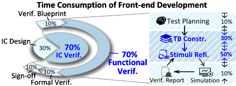
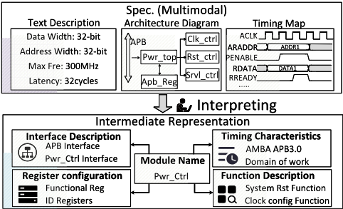
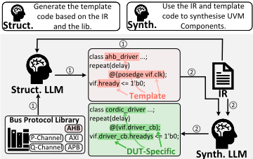
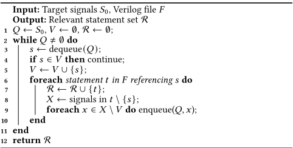
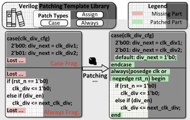
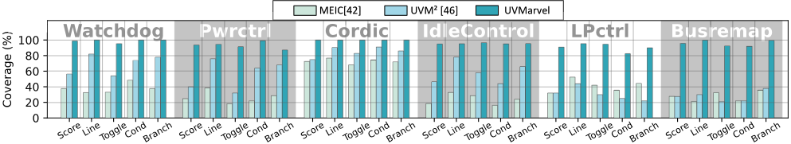
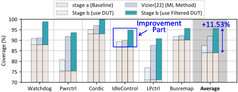

UVMarvel: an Automated LLM-aided UVM Machine for Subsystem-level RTL Verification
UVMarvel：面向子系统级 RTL 验证的自动化 LLM 辅助 UVM 机器
简介
芯片功能验证消耗 IC 前端开发近 70% 工作量，而已有 LLM 辅助验证工作（MEIC、UVLLM、UVM2 等）停留在 IP 级，面对子系统级多 IP 交互时无法可靠组装 UVM testbench，生成激励覆盖率平均低于 40%。UVMarvel 分两阶段解决：先用五字段验证导向中间表示（IR）与 Bus Protocol Library 骨架库，把多模态规格文档转化为结构化上下文，指导 LLM 生成协议正确的子系统级 UVM testbench；再由 Coverage Analyser 解析覆盖率报告，Signal Tracker 从未覆盖点反向追踪跨文件信号依赖，Verilog Patcher 重建最小合法语法结构，形成紧凑的 Filtered DUT 供 LLM 生成补充激励并闭环修复错误。在 6 个工业级子系统基准上取得 95.65% 平均代码覆盖率，端到端 4.5 小时自动执行、比人工流程快 20.17 倍。对团队而言，价值不在硬件验证本身，而在于系统性地示范了结构化上下文组织、依赖保持的上下文裁剪与骨架库约束如何大幅提升 LLM 代码生成的可靠性与效果。
问题
芯片验证是 IC 开发的主要瓶颈，消耗近 70% 的前端开发工作量；尽管 UVM 提供结构化复用，子系统级 UVM testbench 搭建与高质量激励生成仍需大量手工编码、反复 EDA 工具运行和深厚的协议与微架构知识。已有 LLM 方法（MEIC、UVLLM、AssertLLM、UVM2）局限于 IP 级：子系统规格是混合时序波形、框图与文本的多模态长文档，超出通用 LLM 的解释能力，导致 testbench 自动组装不可靠；且 LLM 生成的激励倾向简单重复模式，无法覆盖跨 IP 长依赖链、罕见事件序列与复杂状态迁移，覆盖率平均低于 40% 并过早收敛。
方法
两阶段 LLM 辅助 UVM 流程。Stage a（testbench 构建）：将规格与 RTL 转化为五部分 IR（Module Name、Interface Description、Register Configuration、Timing Characteristics、Functional Description），把多模态信息统一为验证导向的结构化上下文；Bus Protocol Library 为每种总线协议提供 interface/driver/monitor/agent 的 UVM 骨架，LLM 只允许修改指定区域（如配置参数），协议控制流与握手结构保持固定，由 LLM 用 IR 细节（信号名、分组、位宽、地址范围）完成特化。Stage b（激励精炼）：Coverage Analyser 把大型 HTML 覆盖率报告解析为按类型与模块分组的结构化未覆盖项；Signal Tracker 从未覆盖点种子信号出发做单文件追踪加跨文件递归反向追踪，得到依赖切片与顶层 I/O 激励入口；Verilog Patcher 用模板库（module 壳、always 块、case 块等）重建片段的最小合法语法，生成 Filtered DUT；三个不同 LLM 基于 Filtered DUT 并行生成候选序列，在原始 DUT 上仿真，编译/仿真错误回喂给 LLM 修复，并收集不可达覆盖点的 waiver 候选。
关键结果
平均代码覆盖率达 95.65%
从人工提供的 IR 起点到代码覆盖率达 90%，端到端自动执行耗时 4.5 小时，比人工验证流程快 20.17 倍
UVM testbench 生成成功率（SRG）总体 93.33%，仅 AXI 子系统失败；对比方法 MEIC 与 UVM2 在子系统级 SRG 为 0%
用 IR 替代原始规格文档作为输入，平均提升覆盖率近 30%
提供 Bus Protocol Library 使 SRG 提升 65.78%；AXI 生成成功率从低于 7% 提升到超过 90%
激励精炼阶段：Filtered DUT 平均覆盖率增益 11.53%，高于 ML 方法 Vizier 的 6.66% 和直接投喂完整 DUT 的 3.35%
GPT-4.1、Claude 4.5、Gemini 2.5 pro 在相同 IR、协议骨架与 Filtered DUT 下覆盖率非常接近，框架对底层模型选择稳健
创新点
首个面向子系统级、跨主流总线协议（APB、AHB、AXI、P-Channel、Q-Channel）自动构建 UVM testbench 的 LLM 框架，而以往 LLM 验证工作均局限于 IP 级。技术上的区别：用验证导向 IR 统一多模态规格信息而非直接投喂原文；用可被 LLM 受限特化的协议骨架库替代传统 VIP 与纯模板脚本；用 Signal Tracker 加 Verilog Patcher 生成以具体覆盖点为中心的紧凑依赖切片（Filtered DUT），而非 UVLLM/STRIDER 式面向整个设计、不聚焦覆盖点的 AST 依赖树。
团队参考意义
相关度级别：high
命中能力域：3.1 上下文工程与记忆 | 3.3 Agent 架构与工具使用 | 3.5 评测与可靠使用
理由：论文领域是硬件 RTL 验证，但其技术内核与团队能力域高度重合。3.1：五字段 IR 是典型的结构化上下文组织，消融显示比原始长文档平均提升覆盖率近 30%；Coverage Analyser 把 HTML 报告降噪为任务导向摘要属于上下文压缩管理；Filtered DUT 用实验证明'紧凑且保留依赖的上下文'比完整代码（3.35%）甚至 ML 搜索（6.66%）更能释放 LLM 能力（11.53%），是上下文裁剪价值的直接量化证据。3.3：Bus Protocol Library 与 Verilog Patching Template Library 的'骨架+受限改写'模式即技能系统设计，编译/仿真错误回喂修复构成执行可靠性闭环。3.5：论文提供 SRG（可编译且与专家参考一致）的生成质量指标、多基线消融与跨模型稳健性实验，属于 AI 辅助工程的实证研究范式，可直接借鉴到团队的评测体系建设。
建议动作：深入精读并做内部分享
中文全文
arXiv:2605.04704v2 [cs.AR] 2026年5月7日
UVmarvel: an Automated LLM-aided UVM Machine for Subsystem-level RTL Verification ∗
Junhao Ye 1 , 2 , Dingrong Pan 2 , Hanyuan Liu 1 , 2 , Yuchen Hu 1 , 2 , Jie Zhou 1 , 2 , Ke Xu 1 , 2
1 东南大学，中国 2 国家EDA技术创新中心，中国 3 约克大学，英国 4 香港城市大学，香港 † 通讯作者：zhejiang.uk@gmail.com
, Xinwei Fang 3 , Xi Wang 1 , 2 , Nan Guan 4 , Zhe Jiang 1 , 2 †


（b）单个IP与集成IP之间验证复杂度的对比。交互作用与约束耦合导致集成过程中复杂度的增长。
图1. 验证主导IC前端开发。虽然模块级复杂度呈线性增长，但由于IP间的依赖关系，子系统级验证呈指数级增长。（Verif.: 验证，TB: 验证平台，Refi.: 精化，Constr.: 构建，I/F: 接口，Complx.: 复杂度）
自动检测并修复Verilog代码中的错误，以确保全面的验证；AssertLLM[44]利用三个定制的大语言模型（LLM）从规格文档中生成SystemVerilog断言（SystemVerilog Assertions）用于寄存器传输级（RTL）验证，表明LLM能够辅助调试和局部化的测试生成。其中，UVM2 [46]是通用验证方法学（UVM）自动化验证的首次尝试，端到端地生成agent、序列和基本激励。然而，这些进展仍局限于IP级，在IP级中，设计交互是局部的，协议推理也相对有限。
即使已有可用的UVM验证平台，所生成的激励仍然只能达到较低的覆盖率，平均低于40%。它们无法对
挑战。将LLM辅助的UVM验证从IP级扩展到片上系统（SoC）子系统，会在从构建UVM验证平台到生成激励的整个验证流程中带来一系列新的挑战。即使在一个简单的子系统（一个P沟道电源控制器）上，一旦缺少若干接口信号，该框架便反复无法组装出UVM验证平台（第4.5节）。与IP级设计不同，子系统呈现出更丰富的总线接口和更复杂的控制路径，其相关文档是包含时序波形和框图的长篇规格说明，这导致复杂度随IP模块数量呈指数级增长，如图1b所示。这种多模态文档目前超出了通用LLM的解读能力，使得自动组装出正确的子系统级UVM验证平台变得不可靠。
Abstract
验证是集成电路（IC）开发中的主要瓶颈，消耗了近70%的总工作量。尽管通用验证方法学（UVM）通过结构化的验证环境提升了复用性，但构建子系统级UVM验证平台和生成高质量激励仍需要大量的手工编码、反复的EDA工具运行，以及深入的协议与微体系结构专业知识。我们提出了UVMarvel，一个利用大语言模型（LLMs）为子系统级RTL构建UVM验证平台的自动化验证框架。UVMarvel引入了中间表示（IR）和总线协议库（Bus Protocol Library），将异构的规格说明转换为协议正确的子系统级UVM验证平台，并采用信号跟踪器（Signal Tracker）和Verilog补丁库（Verilog Patching Library）来指导基于LLM的激励细化。UVMarvel是首个能够跨主流总线协议自动构建子系统级UVM验证平台的框架，其平均代码覆盖率达到95.65%，同时将验证时间从数个人工工作日缩短至4.5小时的自动化执行。
1 Introduction
为减轻这种人工负担，各公司在 UVM 之上引入了模板驱动的脚本流程 [14, 19, 33]。这些流程将重复性强且结构良好的任务自动化，例如目录初始化、代码骨架生成，或基本的寄存器与序列模板，从而提升了一致性。然而，由于这些工具只是展开预定义模板，并不理解微架构意图，因此无法推断协议时序、事务语义、driver/monitor 行为或功能约束。随着设计的演进，工程师必须手动填补这些语义空白，而覆盖率收敛仍然依赖专家投入而非自动化。
敏捷硬件开发推动现代 SoC 项目走向快速迭代与频繁的设计修订，使验证团队承受着跟上快速变化设计的压力。如图 1a 所示，验证已成为主导性瓶颈，消耗了整个前端周期近 70% 的时间 [17]。为应对这种复杂性，工业界流程主要依赖 UVM。尽管 UVM 具有结构化特性，但在实践中它仍然是手动的，为真实设计搭建完整的验证平台需要深厚的工程专业知识。
大语言模型（LLM）的最新进展为突破这一瓶颈创造了新的机遇。与模板系统不同，LLM 能够处理自然语言规格说明、RTL 结构、协议规则以及设计意图描述[5, 16, 24, 26, 29, 35, 41]，从而能够推理传统脚本无法捕捉的行为。已有工作，例如 MEIC[42] 采用结合 RTL 工具链的双微调 LLM，以自动实现 Verilog 中的错误检测与纠正；UVLLM[21] 将 LLM 与 UVM 方法学相结合，针对角落情形行为、跨多个 IP 的长依赖链、罕见事件序列以及错综复杂的状态转换。例如，子系统的行为往往取决于必须逐步编排的多组件序列（例如电源请求/应答握手），而 LLM 倾向于生成简单、重复的模式，这些模式很快便穷尽显而易见的情形，却遗漏更深层的角落情形。在对 IP 间依赖关系缺乏清晰认识的情况下，LLM 无法可靠地推导出覆盖所有功能点所需的精细序列，从而导致覆盖率过早收敛。贡献。我们提出了 UVMarvel，首个面向基于 UVM 的子系统级验证的自动化 LLM 驱动框架。为了自动构建子系统级 UVM 验证平台，UVMarvel 将面向验证的中间表示（IR）与可扩展的总线协议库（Bus Protocol Library）相结合，使 LLM 能够解读跨异构接口的结构语义与协议行为。在激励细化方面，UVMarvel 采用信号跟踪器（Signal Tracker）提取跨模块的 IP 间依赖路径，并采用 Verilog 补丁模板库（Verilog Patching Template Library）将每条路径提炼为最小语义块，使 LLM 能够推导出提升覆盖率所需的精细多步序列。作为一个为 LLM 提供设计结构与执行行为子系统级访问的统一解决方案，UVMarvel 达到了 95.65% 的工业级覆盖率。总线协议库与 Verilog 补丁模板库已在 https://github.com/SEU-ACAL/reproduce-UVMarvel-DAC-26 开源。
∗ 本文已被 DAC 2026 录用，并将收录于会议论文集中。
Junhao Ye 1, 2, Dingrong Pan 2, Hanyuan Liu 1, 2, Yuchen Hu 1, 2, Jie Zhou 1, 2, Ke Xu 1, 2, Xinwei Fang 3, Xi Wang 1, 2, Nan Guan 4, Zhe Jiang 1, 2 †

2 UVMarvel: An Overview
阶段 a 旨在构建验证平台。有关子系统的信息通常分散在规格说明和寄存器传输级（RTL）中，这使得大语言模型（LLM）难以理解其结构和接口行为。为了提供统一的视图，我们将这些材料转换为一种中间表示（IR），用以概括模块、连接关系和接口角色。由于子系统的行为还进一步依赖于 LLM 难以轻松提取的协议规则，因此提供了 Bus Protocol Library 来给出精确的事务指导。在这些支持下，
为了加速子系统级 RTL 的验证循环，UVMarvel 将 LLM 辅助集成到标准的通用验证方法学（UVM）工作流中，并将整个过程组织为两个阶段，如图 2 所示。该框架以规格说明和 RTL 作为输入，构建完整的 UVM 验证平台，并生成包含错误日志、豁免候选和覆盖率结果的最终验证报告。
LLM 生成 UVM 验证平台，并将其与被测设计（DUT）一起执行，以产生第一份验证报告。
阶段 b 旨在提升覆盖率。问题在于，初始激励通常无法触发深层的多 IP 交互和长依赖链，导致覆盖率过早收敛。为解决这一问题，覆盖率分析器将报告分解为单个未覆盖点。Signal Tracker 会对每个点进行检查，识别出 RTL 中相关的信号路径。随后由补丁步骤对 Verilog 结构进行修补，生成一个保留了必要依赖链的紧凑切片，从而得到过滤后的 DUT（即仅包含与关键路径相关代码的 DUT）。该过滤后的 DUT 与未覆盖点相结合，为 LLM 提供了生成额外激励或有依据的豁免候选所需的上下文。随后加入新的激励，并在原始 DUT 上重新执行验证平台以提升覆盖率，同时生成最终验证报告。
3.1 Intermediate Representation
实践中的验证通常始于测试计划（图 1a），工程师在这一阶段解读规格说明，并将设计意图分解为具体的验证点。然而，现有的基于 LLM 的方法对这一规划阶段却投入甚少 [3, 8, 43]。
在这一观察结果以及标准验证方法学文档 [2, 4, 7, 36] 的指导下，我们构建了一个由五部分组成的中间表示（IR），其组成部分包括模块名称（Module Name）、接口描述（Interface Description）、寄存器配置（Register Configuration）、时序特性（Timing Characteristics）和功能描述（Functional Description），如图 3 所示。该 IR 将 UVM 环境、agent、
从 UVM 验证平台的角度来看，我们需要的是比规格说明所暴露的内容具体得多的信息：(i) 对于环境层次结构（uvm_env、uvm_agent、uvm_driver、uvm_monitor），它必须知道 DUT 是如何被实例化的，以及它如何与外部系统进行通信；(ii) 对于 uvm_reg_block 及其适配器，它需要可编程状态的相关信息（即存在哪些寄存器、这些寄存器被映射到何处、如何被复位以及如何被访问）；(iii) 对于序列生成，它需要接口上的时序假设，以及应当被激励的关键功能场景和边界情况。在实践中，人类验证工程师在开始编写 UVM 代码或测试计划之前，所收集的正是这些信息。

寄存器模型和场景构建所需的信息提炼为一种 LLM 可直接使用的、以验证为中心的描述。
3.2 Bus Protocol Library
在构建子系统级 UVM 验证平台时，总线侧组件（例如驱动器、监视器、agent 和接口）是不可或缺的：没有它们，子系统就无法互连其 IP 模块，也无法端到端地演练其行为。工业级验证 IP（VIP）将协议规则封装为可复用的驱动器、监视器和检查器 [20, 30, 38]，但这些 VIP 既无法从异构的规范中综合出新的、针对特定设计的总线组件，也无法以 LLM 能够适配的形式暴露协议结构。1
基于这一思路，我们构建了一个总线协议库（Bus Protocol Library），以辅助我们的框架生成总线侧 UVM 组件。对于每种受支持的协议，该库都提供接口、驱动器、监视器和 agent 的 UVM 骨架。在生成过程中，框架利用 IR 中的协议信息来选择骨架，并提示 LLM 利用其余的 IR 细节（例如信号名称、分组、位宽和地址范围）对骨架进行特化，如图 4 所示。为了使协议语义在不同设计之间保持一致，LLM 仅被允许修改骨架中的指定区域（例如配置参数），而协议控制流和握手结构保持固定。这样一来，协议语义来自协议库，而 LLM 主要负责将其适配到每个 DUT 实例。
主流总线协议编码了丰富的排序规则、握手关系和时序依赖，其官方规范冗长且异构，常常混杂着时序图、波形和描述性文字。即使能够获得这些文档，受限于有限的上下文窗口、长程依赖和多模态产物，当前的 LLM 也难以将协议手册转化为正确的 UVM 组件 [9]。与此同时，这些协议依赖于少量规整的行为模式，而在约束的引导下，LLM 能够有效地阅读和修改结构化代码。这促使我们将协议行为表示为一组简洁的、人类可读的 UVM 骨架，用以捕获稳定的请求/响应规则和时序规则，然后让 LLM 将这些骨架特化到每个 DUT。
1 在我们的初步 SoC 实验（第 4.5 节）中，一旦省略了某些接口信号，被要求直接构建总线侧组件的通用 LLM 便反复无法组装出正确的子系统级 UVM 验证平台。

3.3 Coverage Analyser
在借助 IR 和 Bus Protocol Library 构建 UVM 验证平台之后，验证流程便进入仿真阶段。每次运行都会生成一份覆盖率报告，其形式通常是将覆盖率数据与 UI 标记混杂在一起的大型 HTML 页面。这种格式便于人工浏览，却不适合 LLM，因为其中大部分 token 都是版式噪声，而有用的覆盖率条目则散布在众多章节之中。为了使覆盖率反馈变得可用，我们引入了覆盖率分析器（Coverage Analyser），将这些报告转换为紧凑的、面向任务的摘要。
该分析器以 HTML 覆盖率报告作为输入，并解析其中的覆盖率类别。对于每个类别，它会提取所有未覆盖或部分覆盖的条目，以及层次化名称和源文件等关键上下文信息。随后，它将这些条目按覆盖率类型和模块进行分组，以结构化文本的形式输出，并提供给 LLM。这一处理去除了 UI 样板内容，仅呈现未覆盖的目标，从而使 LLM 能够专注于生成额外的激励，以填补剩余的覆盖缺口。
3.4 Signal Tracker
在收集覆盖率反馈之后，UVMarvel 会分析某些覆盖率点为何仍未被覆盖。在实践中，LLM 生成的激励往往使许多深层边角用例未被测试，导致覆盖率偏低。这些缺失的用例通常是深层边角场景，其激活依赖于跨越多个 IP 和多个周期的长信号链，例如握手。要命中这些点，需要按特定的顺序和时序驱动正确的信号。在子系统级 RTL 中，相关的赋值和条件分散在众多文件和 always 块中，因此 LLM 难以直观地看出某个未覆盖的信号是如何回溯连接到可控输入的。
Algorithm 1: Single-File Signal Tracing

Junhao Ye 1 , 2 , Dingrong Pan 2 , Hanyuan Liu 1 , 2 , Yuchen Hu 1 , 2 , Jie Zhou 1 , 2 , Ke Xu 1 , 2 , Xinwei Fang 3 , Xi Wang 1 , 2 , Nan Guan 4 , Zhe Jiang 1 , 2 †
Algorithm 2: Cross-File Recursive Tracing for Subsystems
输入：目标信号 𝑆0，子模块文件 {𝐹1, ..., 𝐹𝑘}，顶层文件 𝐹top
输出：全局依赖集 G
1 𝑆 ← 𝑆0, 𝑖 ← 0, G ← ∅;
2 repeat
3 𝑖 ← 𝑖 + 1, 𝐸 ← ∅;
4 foreach 子模块文件 𝐹𝑗 do
5 𝑉𝑗 ← Algorithm 1(𝑆, 𝐹𝑗);
6 G ← G ∪ 𝑉𝑗;
7 从 𝑉𝑗 中提取 𝐹𝑗 的 I/O 信号并加入 𝐸;
8 end
9 𝑆 ← unique(𝐸);
10 until 𝑆 = ∅;
11 使用 G 在 𝐹top 上运行 Algorithm 1，并保留 𝐹top 的所有 I/O 端口;
12 return G
诸如 UVLLM [21] 等现有工作受 STRIDER [45] 启发，使用基于抽象语法树（AST）的依赖树来定位重要信号，但这些依赖树在子系统级 RTL 上会变得非常庞大，并且不以任何特定的覆盖点为中心。我们则遵循工程师调试覆盖率时的做法：从未覆盖的信号出发，收集定义或使用该信号的语句，并反向追踪至顶层 I/O。Signal Tracker 将这一过程自动化：它以一组来自未覆盖覆盖表达式的种子信号 𝑆0 以及子系统级 Verilog 文件作为输入，生成一个紧凑的跨文件依赖切片 G，同时给出测试平台（testbench）可用以驱动这些信号的顶层 I/O 端口。
子系统级设计通常横跨多个 .v 文件，重要的链路常常跨越模块边界。因此，我们采用一种简单的递归扩展，将追踪扩展到文件之间：
单文件追踪。Algorithm 1 作用于单个 Verilog 文件 𝐹𝑗。给定当前种子集 𝑆，它会找出所有读取 𝑆 中任一信号或向其赋值的语句，将这些语句加入 R，并把任何新出现的信号压入队列。所得的集合 𝑉𝑗 是文件 𝐹𝑗 中与 𝑆 直接相关的 RTL 的一个小子集。
跨文件扩展。从 𝑆0 出发，我们对每个子模块文件 𝐹𝑗 应用 Algorithm 2，并将各片段 𝑉𝑗 合并到全局集合 G 中。对每个 𝑉𝑗，我们只保留其中的子模块输入和输出端口，将它们收集为新的种子集 𝑆，并重复这一过程，直到不再发现新的接口信号。最后，我们利用 G 中积累的依赖关系，在顶层文件 𝐹top 上运行 Algorithm 1，并保留所有顶层 I/O 端口作为合法的激励入口点。
至此，Signal Tracker 已经识别出与每个未覆盖覆盖点相关的 RTL 语句和信号，并将它们关联到可控的顶层接口。这些语句仍然是片段，分散在各个文件中，缺少其原本所在的模块和进程上下文。在下一步中，我们围绕它们重建少量 Verilog 结构，使其形成对设计的一个连贯视图，从而可以输入给 LLM。
3.5 Verilog Patcher
如第 3.4 节所述，Signal Tracker 识别出与每个未覆盖覆盖点存在因果关联的 RTL 语句和信号，并将它们链接到相关的顶层接口。然而，一旦从原始文件中被提取出来，这些语句便分散在不同的 always 块和模块之中，并且往往丢失了使其成为合法 Verilog 代码所需的头部和周围控制结构。尽管 LLM 能够容忍一定程度的不完整性并编辑部分结构化的程序 [23, 47]，但它们仍然需要基本的语法单元来理解控制流和数据流。
为了恢复这种最小结构，我们引入了 Verilog Patching Template Library 以及使用该库的 Patcher。该库针对典型的 RTL 结构提供了一小组模式，包括模块外壳、always 块、case 块、连续赋值和实例级连接，每种模式仅保留其必要的语法形式。在修补过程中，源自同一结构的语句会被归为一组并附加到相应的模板上。例如，如果 tracker 收集了来自某个 case 块的分支赋值，但周围的 case / endcase 缺失，Patcher 会应用 case 块模板来重建头部和结束关键字；如果某条赋值原本位于一个 always 块内但现在被孤立出来，Patcher 会使用 always 块模板重新引入最小的进程包装。

工作流程如下。我们取 Signal Tracker 所报告的关键语句，Verilog Patcher 检查其周围的 RTL，以确定每个片段来自 case 块、always 块还是模块外壳，然后从库中选出匹配的模板。它补全缺失的结构，生成代码的修补版本，即 Filtered DUT。如图 5 所示，左侧显示了不完整的 case 和 always 片段（红色），右侧显示了修补后的版本，其中恢复了 default / endcase 关键字，并由一个带有适当敏感列表的 always 块包裹。随后，在激励细化阶段，该 Filtered DUT 会被呈现给 LLM。
3.6 LLM-Guided Sequence Execution
在 UVM 验证平台中，序列（sequence）是激励的执行载体：它决定将哪些事务（transaction）施加到被测设计（DUT）上，以及施加的顺序和时序。在我们的框架中，大语言模型（LLM）基于 Filtered DUT 和未覆盖点进行推理，但所有生成的序列都在原始的子系统级 UVM 验证平台上实例化并运行，因此覆盖率始终是在原始 DUT 上测量的。
为避免依赖单一模型的判断，我们采用三个不同的 LLM 来进行覆盖率分析和序列生成，这有助于减少偏差并探索更广泛的激励空间。在给定 Filtered DUT 和未覆盖项的条件下，各 LLM 提出候选序列，这些候选序列在原始 DUT 上实例化并进行仿真。在此循环过程中，我们还会要求模型标记那些看起来本质上不可达的覆盖点；这些覆盖点被收集为豁免候选（waiver candidates），并可在最终覆盖率报告中标记为已豁免（waived）。如果某个候选序列导致编译或仿真错误，错误信息会被反馈给 LLM，以修复或丢弃该序列并再次尝试，从而闭合我们框架的反馈回路。
| Design Name | Protocol | Description | Module Counts | Line Counts |
|---|---|---|---|---|
| Watchdog | APB | detects failures via a programmable counter, triggers an interrupt, and resets if ignored, with APB-configurable locked registers. | 3 | 1500+ |
| Pwrctrl | APB | provides APB register control for SCP power, clock, and reset signal management. | 9 | 2000+ |
| Cordic | AHB | provides hardware acceleration for trigonometric and square root calculations. | 3 | 1100+ |
| IdleControl | Q-Channel | manages AXI and DMA interfaces, entering idle/stop states and accepting or rejecting low-power requests based on interface activity. | 3 | 800+ |
| LPctrl | P-Channel | enables safe CDC and low-power data exchange by using a low-power channel. | 8 | 1500+ |
| Busremap | AXI | converts master-slave signals, providing timing isolation, synchronisation, and transaction tracing for secure, efficient data exchange. | 10 | 3000+ |
| Design Name | Protocol | Description | Module Counts | Line Counts |
| Design | Code Coverage (%) | Functional Coverage (%) |
|---|---|---|
| Watchdog | 98.84 | 100 |
| Pwrctrl | 93.66 | 90.64 |
| Cordic | 100 | 100 |
| IdleControl | 94.9 | 96.12 |
| LPctrl | 90.83 | 89.33 |
| Busremap | 95.66 | 98.27 |
| Design | Code Coverage (%) | Functional Coverage (%) |
4 Evaluation
Setup. Weevaluate UVMarvel using LLM agents deployed through the ChatGPT API, with GPT-4.1 as the default model and Claude 4.5/Gemini 2.5 pro as comparative baselines. All generated testbenches are compiled and simulated using Synopsys VCS.
4.1 Evaluation Metrics
生成成功率（SRG）。该指标衡量所生成的 UVM 测试平台在语法上有效且功能正确的频率。对于每个设计，我们让大语言模型（LLM）总共生成 𝑁 个测试平台。若某次生成满足以下条件，则计为成功：(i) 该测试平台无错误地完成完整的 VCS 编译与仿真流程；(ii) 在相同的回归激励下，所有检查器均通过，且观测到的输出与由经验丰富的验证工程师构建的参考结果一致。成功率为
覆盖率。在测试平台于 VCS 上成功运行后，我们报告由仿真器收集的代码覆盖率和功能覆盖率。代码覆盖率包括：
功能覆盖率通过用户定义的 covergroup 和 coverpoint 来度量，这些 covergroup 和 coverpoint 用于跟踪指定的场景、事务和状态组合是否已被执行。2
4.2 Benchmark
与 RTLLM [28]、Verilog-Eval [25] 和 UVM2 [46] 等在孤立 RTL 模块上运行的 IP 级基准测试（benchmark）不同，我们的评估基于来自工业界的子系统级设计，反映了真实的验证挑战。如表 1 所总结，这些 benchmark 涵盖通过 APB、AHB、AXI、PChannel 和 Q-Channel 接口互连的异构 IP。
2 我们在对比中聚焦于代码覆盖率，因为它直接定义在 RTL 结构之上，因此在不同设计与方法之间具有可比性。而功能覆盖率则依赖于工程师定义的 covergroup，反映的是项目特定的意图；在实践中，通常只有在代码覆盖率超过约 90% 之后才会对其进行考察，即便如此它仍带有主观性。为保持评估的客观性，所有对比研究与消融研究均以代码覆盖率作为主要指标，且除非另有说明，文中所述覆盖率均指代码覆盖率；为完整性起见，我们仍在表 2 中使用由经验丰富的工程师编写的 covergroup 报告了功能覆盖率。
4.3 Overall Framework Effectiveness
测试平台生成的 SRG。UVMarvel 在所有子系统组件上取得了 93.33% 的整体 SRG：只有基于 AXI 的子系统失败，主要原因是 AXI 通道之间的协调不正确（例如 AW/W/B 握手不一致）。相比之下，现有的测试平台生成工作（例如 MEIC[42] 与 UVM 2 [46]）在此任务上的 SRG 为 0%，因为这些方法局限于 IP 级 RTL，无法处理寄存器配置、总线事务以及其他仅在子系统级 RTL 中才会出现的问题。
执行时间。UVMarvel 同时涵盖 UVM 测试平台构建与激励精化。从人工提供的 IR 出发并持续运行直至代码覆盖率达到 90%，我们的框架在基准测试子系统上耗时 4.5 小时，比人工验证流程快 20.17 倍，如图 6 所示。换言之，以往需要耗费数个工作日进行人工驱动 UVM 开发与回归的子系统级验证任务，如今可在小时量级的自动化运行内完成。
覆盖率。UVMarvel 达到 95.65% 的平均代码覆盖率。我们与两个自动化激励生成基线进行对比：依赖随机激励的 MEIC[42]，以及通过结构化提示与模板激活 LLM 能力的 UVM 2 [46]。由于两者均缺乏总线协议知识，我们为它们提供了预先构建的子系统级 UVM 测试平台以及 UVMarvel 所使用的 Bus Protocol Library，以便该对比能够隔离出激励 Coverage/%
![Figure 6. End-to-end verification time: UVMarvel vs. experts (across all benchmarks). We exclude the test planning/IR authoring phase (0𝑡 0 ) from time evaluation to ensure precision-although this slightly lowers the acceleration ratio- to aligns UVMarvel's automated verification objectives with manually defined coverage goals, guaranteeing fair and objective experimental results. UVMarvel achieves 90% coverage nearly twenty times faster than manual verification and converges to an industrial-grade final coverage level comparable to the expert flow. ( 𝑡 0 : end of IR/test planning, 𝑡 1 : 90% coverage by UVMarvel , 𝑡 2 : coverage closure by UVMarvel , 𝑡 3 : 90% coverage by experts, 𝑡 4 : coverage closure by experts, 𝛿𝑇 1 : time for UVMarvel to reach 90% coverage, 𝛿𝑇 2 : time for experts to reach 90% coverage)](assets/a784/figures/fig_8.png)
5
1 2 2 1 2 1 2 1 2 1 2
Xinwei Fang , Xi Wang , Nan Guan , Zhe Jiang
Junhao Ye , , Dingrong Pan , Hanyuan Liu , , Yuchen Hu , , Jie Zhou , , Ke Xu , , 3 1 , 2 4 1 , 2 †


生成能力。如图 7 所示，UVMarvel 在我们基准测试的所有指标上都取得了更高的代码覆盖率。
4.4 Impact of IR on Stage a
我们通过对比两种设置来评估中间表示（IR）的影响：一种只向大语言模型（LLM）提供原始规格说明，另一种则向其提供 IR。如图 8 所示，使用 IR 平均可将覆盖率提升近 30%，这表明 IR 并非对规格说明的简单改写。进一步观察可以发现，在 speconly 设置中，LLM 常常实例化出不完整的验证环境，例如遗漏总线监视器，或未能将寄存器模型连接到相应的总线 agent，导致被测设计（DUT）的大部分从未被驱动。通过以可预测、可组合的格式呈现设计意图，IR 帮助模型推断握手方向、事务顺序和接口语义，从而得到更完整、更有效的子系统级 UVM 验证平台。
4.5 Impact of Bus Protocol Library on Stage a
如图 9 所示，提供总线协议库（Bus Protocol Library）使 SRG 提升了 65.78%，这表明 LLM 难以直接从规格说明中推断协议行为。这一挑战在 AXI 上尤为突出，因为其握手模式与解耦通道引入了非平凡的顺序、响应和背压约束。在没有引导的情况下，AXI 的成功率低于 7%；而在协议库的辅助下，成功率超过 90%。
我们进一步通过对比两种设置来评估总线协议库的作用：（1）在不提供协议库的情况下提示 LLM；（2）将协议库作为引导提供。在这两种情况下，所有非总线 UVM 组件均保持固定并作为上下文提供；仅要求 LLM 生成总线侧组件。
4.6 Impact of Signal Tracker & Verilog Patcher on Stage
我们通过测量精化（refinement）过程中 score 覆盖率的提升来评估 Signal Tracker 与 Verilog Patcher 的作用。已有研究表明，机器学习（ML）能够辅助探索设计与参数空间 [1, 6, 10-13, 15, 18, 22, 27, 31, 32, 34, 37, 39, 40]，因此我们还与一种具有代表性的基于 ML 的优化方法进行了对比。具体而言，我们采用 Google 开源的 Vizier 框架 [22] 作为基于 ML 的精化方法。


| Design Name | GPT4.1 | Claude4.5 | Gemini2.5pro |
|---|---|---|---|
| Watchdog | 98.7 | 98.7 | 98.84 |
| Pwrctrl | 93.4 | 93.66 | 93.66 |
| Cordic | 100 | 100 | 100 |
| IdleControl | 94.9 | 94.8 | 94.6 |
| LPctrl | 90.7 | 90.7 | 90.83 |
| Busremap | 95.4 | 95.66 | 95.6 |
| Design Name | GPT4.1 | Claude4.5 | Gemini2.5pro |
以 Stage a 的覆盖率作为基线，我们对比了三种精化策略：将完整的被测设计（DUT）提供给大语言模型（LLM）、使用 Vizier 精化激励，以及将 Filtered DUT 提供给 LLM。如图 10 所示，Filtered DUT 取得了最大的平均增益（11.53%），而 Vizier [22] 与原始 DUT 分别仅带来 6.66% 和 3.35% 的提升。由这些结果可得出两点观察。(1) 当直接应用于完整的子系统级 RTL 时，LLM 在提升覆盖率方面进展有限；尽管 Vizier [22] 需要大量的优化迭代与计算，但相比无引导的 LLM 精化，它能更好地应对庞大的搜索空间。(2) 一旦我们通过 Filtered DUT 提供紧凑且保留依赖关系的上下文，LLM 在覆盖率增益上便同时超越原始 DUT 基线与 ML 基线，这表明当与适当的结构性引导相结合时，LLM 在验证方面具有潜力。
4.7 Code coverage achieved by different LLMs
为了降低依赖单一模型而可能遗漏边界情况的风险，Stage b 在生成新序列时采用了三个不同的 LLM。如表 3 所示，在相同的 IR、协议脚手架（protocol scaffolding）和 Filtered DUT 下，这三个模型取得了非常相近的覆盖率。这种跨模型的趋同表明，UVMarvel 对 LLM 的选择具有鲁棒性；即使底层模型发生变化，其覆盖率提升依然保持稳定。
6
5 Conclusion
我们提出了 UVMarvel，这是首个面向子系统级 RTL 的基于 UVM 的验证框架。通过将 IR 与 Bus Protocol Library 相结合，UVMarvel 能够自动构建子系统级 UVM 测试平台（testbench）；再通过将 Signal Tracker 与 Verilog Patching Library 配合使用，进一步将覆盖率得分提升至 95.65%，整个自动化执行耗时 4.5 小时。
6 Acknowledgement
我们感谢审稿人提出的有益反馈。本工作得到国家重点研发计划（批准号：2024YFB4405600）、江苏省基础研究计划（批准号：BK20243042）以及中央高校基本科研业务费专项资金（编号：2242025K20013）的资助。